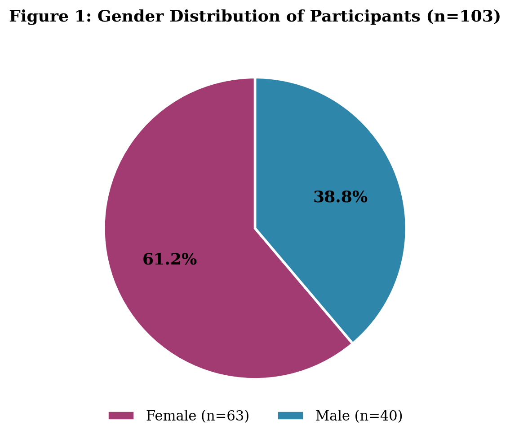
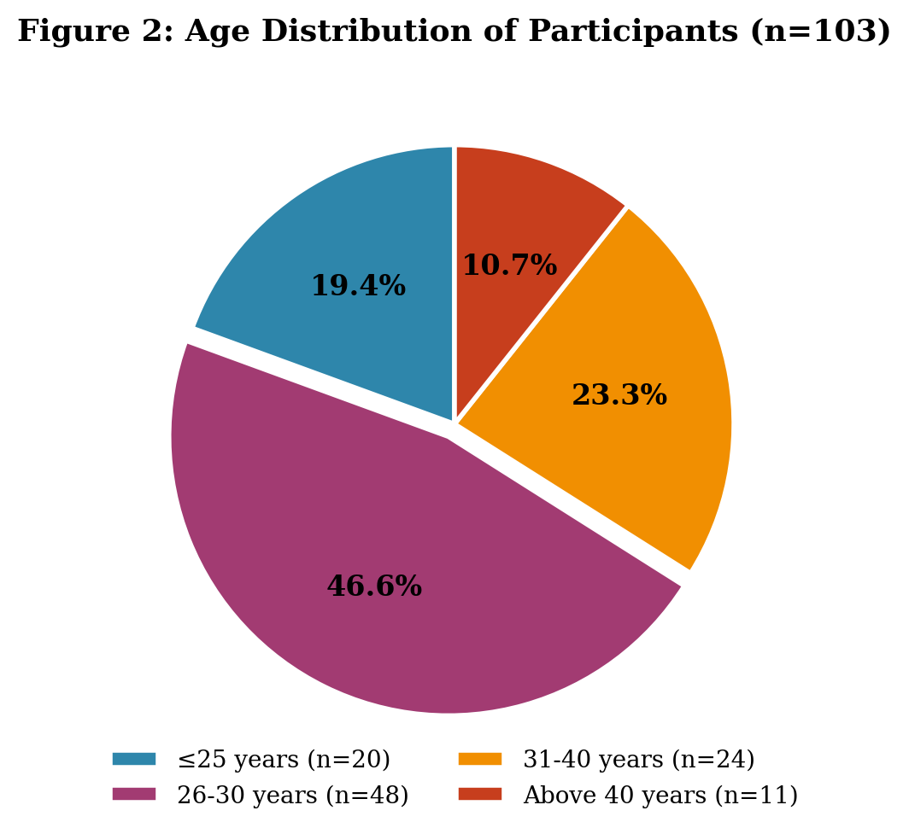
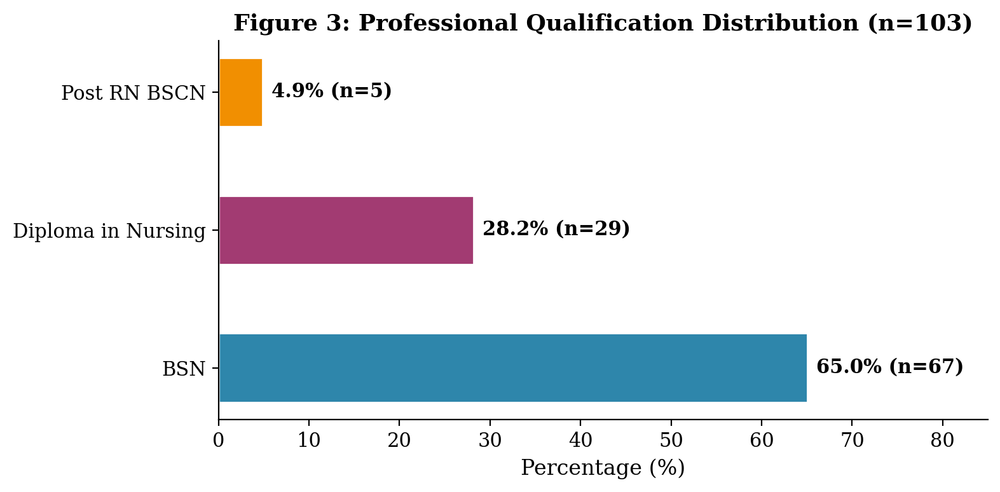
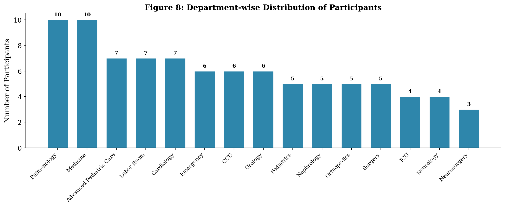
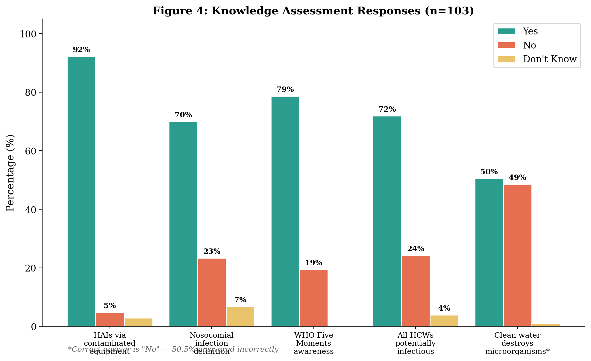
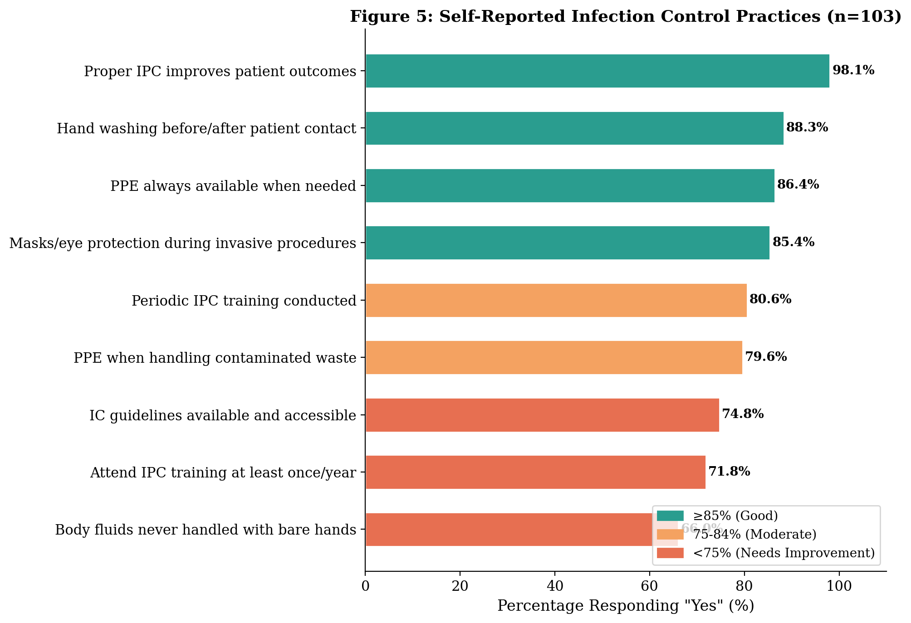
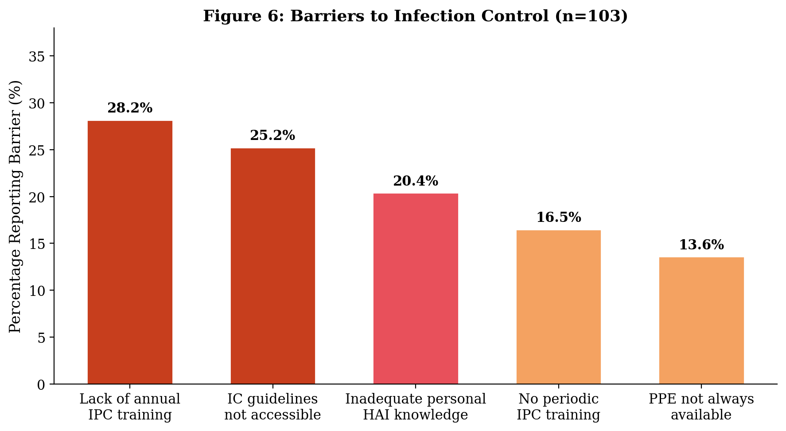
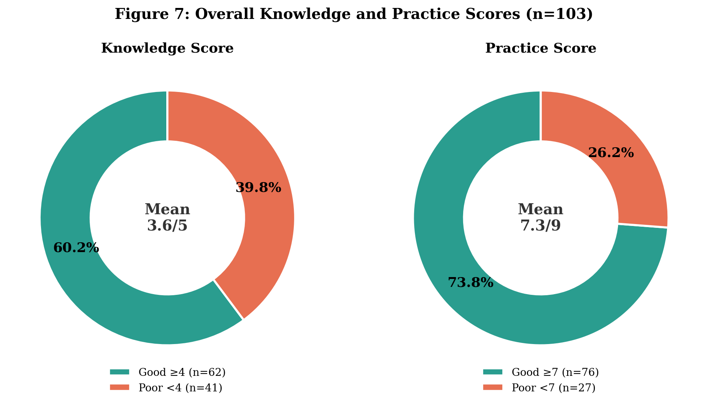

Declaration
I, Tasleem d/o Mohammed Ali Rind, hereby declare that the dissertation topic "Knowledge, Practices, and Challenges of Infection Prevention and Control Among Nurses in Tertiary Healthcare Settings", which I submitted is entirely the result of my own work. Every effort is made to indicate this clearly, with due reference to the literature. The contents of the thesis, in full or parts, have not been submitted to any other Institute or University for the award of any other degree or diploma.
The work was done under the supervision and guidance of Sir Gobind Rai.
Place: Liaquat College Of Nursing Female, Jamshoro
Date:
Name: TASLEEM
Signature:
Certificate
This is to certify that Tasleem has completed this research work titled "Knowledge, Practices, and Challenges of Infection Prevention and Control Among Nurses in Tertiary Healthcare Settings" as a research scholar under my supervision and guidance for the partial fulfillment of the requirement of the regulations laid down for the degree of Bachelor of Science in Nursing at Liaquat College Of Nursing Female, Jamshoro.
Supervisor's Name:
Gobind Rai
Signature:
Dedication
To my beloved parents, whose endless sacrifices, heartfelt prayers, and unconditional love have been the foundation of everything I have achieved. Whatever I am today is because of you.
And to my beloved fiancé, Afzal Khan, whose unwavering love, patience, and constant encouragement gave me the strength to persevere through every challenge.
Acknowledgement
All praises and thanks are due to Almighty Allah, the Most Beneficent and the Most Merciful, who bestowed upon me the wisdom, strength, and determination to complete this research work successfully.
I would like to express my deepest and most heartfelt gratitude to my esteemed supervisor, Sir Gobind Rai (MSN), whose exceptional mentorship, profound knowledge, and tireless dedication have been the guiding light throughout this entire research journey. His scholarly expertise, insightful feedback, and remarkable patience at every stage of this thesis from the initial concept to the final manuscript were truly invaluable. It was his constant encouragement, constructive criticism, and unwavering belief in my abilities that made the successful completion of this work possible. I consider myself truly fortunate to have worked under the supervision of such a distinguished and inspiring mentor.
I owe a deep debt of gratitude to my loving parents, whose prayers, sacrifices, and unwavering moral support have been my greatest strength. I am equally grateful to all the participants and the nursing staff of LUMHS Jamshoro and Hyderabad campuses for their voluntary participation and cooperation during data collection, without which this study would not have been possible.
Special thanks to Mr. Afzal Khan, BS Computer Science (University of Sindh, Jamshoro), for his valuable technical assistance with statistical analysis and manuscript preparation.
Lastly, I am sincerely thankful to all my dear friends and well-wishers who stood by me, encouraged me, and believed in me at every step of this journey. May Allah bless you all.
Abstract
Background: Hospital-acquired infections (HAIs) are a massive burden on healthcare facilities globally. Since nurses are constantly at the bedside, they act as the primary defense line for infection prevention and control (IPC). Yet, across Pakistan, we keep seeing a disconnect between what nurses know and what they actually do on the ward.
Objective: We wanted to figure out the real level of knowledge, daily practices, and institutional roadblocks tied to infection control among the nursing staff at Liaquat University of Medical & Health Sciences (LUMHS) in Jamshoro and Hyderabad.
Methods: We ran a descriptive cross-sectional survey involving 103 LUMHS nurses. They filled out a 15-item questionnaire covering what they knew, what they practiced, and what was stopping them. We then crunched the numbers in SPSS 23, looking at basic frequencies and running chi-square tests to spot correlations.
Results: Most of our nurses were female (61.2%), firmly in their mid-to-late twenties (46.6%), and had a BSN degree (67.0%). They scored reasonably well on knowledge, averaging 3.61 out of 5, which means about 60.2% had a solid grasp of the basics. Practice scores looked even better on paper (mean 7.31/9, 73.8% "good practice"). But down in the details, we found some startling issues: half (50.5%) genuinely thought plain clean water could kill microbes. Roughly 30.1% admitted to touching body fluids without wearing gloves, and 28.2% hadn't been to an IPC workshop in over a year. Demographics like age and gender didn't really swing the results (p>0.05).
Conclusion: Overall, the nurses know what they are supposed to do, but putting it into practice is hit or miss. The biggest hurdles aren't related to individual ignorance they are systemic. Fixing things like irregular training, hidden guidelines, and empty glove boxes will probably do much more good than just another lecture on hand-washing.
Table of Contents
1. Introduction
Nobody wants to go to the hospital and leave sicker than when they arrived. Yet, hospital-acquired infections (HAIs) are a massive, ongoing crisis worldwide. When patients pick up a new bug during treatment, everything gets worse recoveries stall, hospital stays stretch on, and medical bills pile up. Because nurses are the ones stationed at the bedside around the clock, they are right in the line of fire for capturing and transmitting these infections.[1] This risk spikes dramatically in tertiary care centers. Think about it: you have wards packed with immunocompromised patients, lines and tubes everywhere, and constant foot traffic. It's essentially the perfect storm for bugs to spread.[2]
We know exactly how to stop this. According to the World Health Organization, plain old hand hygiene is still the absolute best tool we have to block HAIs.[3] You pair that with proper masks and gowns, safe needle disposal, and sterile equipment, and infection rates plummet.[4] But knowing the rules and following them are two very different things. The reality on the ground especially in under-funded, resource-strapped hospitals is that staff often miss the mark on these golden standards.[5]
Time and again, research turns up the same frustrating pattern: a massive gap between what nurses know they should do, and what they actually do during a chaotic shift.[1,4,6] A nurse can easily check the right boxes on a protocol exam, while quietly admitting that they skip steps on the ward. Why? The usual suspects: terrible workloads, chronic supply shortages, and a lack of ongoing training.[7,8]
In Pakistan, these challenges hit even harder. The public healthcare system is overwhelmed. Wards are overcrowded, and you frequently see just a handful of nurses managing dozens of patients. Protective supplies run out mid-shift, and administrative oversight is often sketchy at best.[2,5] Picture a nurse grinding through a 12-hour shift, juggling double the normal patient load, staring at an empty glove box, with no manager in sight. That's a universe away from the pristine, controlled clinics where international guidelines are drafted. Given that tertiary hospitals deal with the absolute sickest patients in the country, one slip-up can be disastrous. Despite this, we still have very little targeted research looking into these specific high-stakes environments in Pakistan.
1.1 Gaps in Current Research
While local studies do confirm that Pakistani nurses struggle to match their actions to their knowledge, there are still some glaring blind spots. Most papers treat "knowledge" and "practice" as two separate scores, rarely digging into the actual roadblocks standing in the nurses' way.[1,2,3,4,5] Plus, nearly everyone relies on self-reported surveys. Naturally, people want to look good on paper, so we are probably seeing inflated compliance rates. Very few researchers are actually standing there to observe what happens.
Tertiary teaching hospitals are also slipping through the cracks. These massive centers take on regional referrals and house massive ICUs where infection risks hit the ceiling. We still don't fully know if the hurdles here are completely different from a rural district hospital. Most critically, researchers tend to treat things like "broken sinks" or "empty supply closets" as minor background noise rather than the primary culprit. When the WHO manual assumes you always have running water and endless sterile gloves, how is a resource-starved nurse actually supposed to prioritize their tasks?
1.2 Study Objectives
This research examines infection control among nurses in tertiary care settings through four objectives:
- Assess current knowledge levels regarding infection prevention protocols
- Evaluate reported infection control practices during patient care
- Identify institutional, environmental, and individual barriers impeding adherence
- Analyze relationships between demographics, knowledge, practices, and barriers
2. Review of Related Literature
When you look back at recent local research, a very distinct pattern emerges. Take Khowaja's team, for instance, who surveyed 30 nurses over at the Liaquat Institute in Thatta.[1] Their findings were pretty clear: the nurses understood the core concepts of infection control perfectly well, but their day-to-day compliance missed the mark. The usual suspects took the blame not enough continuing education and constantly empty supply closets. What they didn't really figure out, though, was the nuance. If you miraculously stocked the hospital with endless gloves, would compliance actually jump? Or is the issue deeper than that?
Over in Baluchistan, Batool and her colleagues looked at a much larger group 138 nurses stationed across two major Quetta hospitals.[2] They found some worrying gaps in basic hand hygiene, though oddly, almost everyone claimed to use gloves (99.3%) and masks (97.8%). Interestingly, they looked into attitudes too. Most nurses felt that catching a cold meant you shouldn't step foot on the ward, and over three-quarters admitted that local cultural habits speed up the spread of disease. A major takeaway here was the total lack of oversight; poor sanitation and absent ward managers were devastating factors. Interestingly enough, things like age or years on the job made virtually zero difference to how safely someone practiced (p>0.05).
Meanwhile, Kousar's research at Aziz Bhatti Shaheed Hospital in Gujrat found a similar "know-do" gap.[3] They used the Health Belief Model to unpick why aware nurses still tripped up. Their big push was for dedicated infection control committees. They also found a gender split female nurses scored significantly higher on knowing when to use antiseptics, use an autoclave, and wash their hands. The catch? The study kind of assumed that hospital committees actually wield power in public Pakistani wards, which isn't always reality.
Right next door in Hyderabad, Soomro's team checked on 60 nurses at Isra University Hospital.[4] The basics looked great 85% routine hand hygiene. But when the stakes got higher, compliance plummeted. Barely half the staff (56.7%) bothered to wear gowns or contact gear when explicitly required, and shockingly, mostly everyone skipped gloves when drawing blood (only 45% complied). It paints a picture of staff handling the easy, routine stuff fine, but dropping the ball entirely during specialized procedures.
Perhaps the most eye-opening piece of evidence comes from Baqar's observational work in Khairpur with 111 nurses.[5] Surveys are one thing, but actually watching people work tells another story. While 88.3% of the nurses confidently stated that staff need vaccinations, two-thirds of them were actively recapping dirty needles a massive hazard. Because Baqar directly observed the staff, the truth came out: actual handwashing compliance before an aseptic task was effectively zero (0.9%), and only 19.8% washed up after pulling off gloves. It proved that self-reported surveys are incredibly biased. Much like Kousar, Baqar found that female staff were far stricter with protocol (p=0.000) than their male counterparts.
2.1 Synthesis of Evidence
When you stack these five studies together, the narrative is completely unanimous. Pakistani nurses know what to do. They can rattle off the protocols. But walk into almost any ward whether in Quetta, Gujrat, or Khairpur and the actual practice on the floor is desperately lagging behind. Everyone points the finger at the same few culprits: crushing workloads, zero resources, and missing training. Yet almost no one has tried to figure out which of those hurdles is the most damaging. Worse still, because nearly every paper relies on nurses self-reporting their own good behavior, the data is heavily padded. As Baqar's sneaky observations forcefully proved, what nurses say they do is vastly different from what happens at 2 AM on a chaotic shift.[5]
This is exactly why the current study matters. By digging into the tertiary setup at LUMHS, we are trying to drag those institutional background barriers into the foreground to see exactly what is crippling our nursing staff's ability to protect their patients.
3. Materials and Methods
3.1 Study Design
We set this up as a descriptive cross-sectional study. Essentially, we wanted a snapshot of what LUMHS nurses knew about infection prevention, what their actual daily practices looked like, and what roadblocks were stopping them from doing their jobs properly.
3.2 Study Setting and Duration
The research took place at Liaquat University of Medical & Health Sciences (LUMHS), covering both the main Jamshoro campus hospital and the Hyderabad branch. We hit the ground running for data collection between January and February 2026. Since LUMHS is a massive public sector tertiary teaching hospital, we were able to pull nurses from everywhere Medicine, Surgery, ER, Pediatrics, the ICUs, Cardiology, Gynecology, and the Operation Theaters.
3.3 Sample Size Calculation
To figure out exactly how many people we needed to talk to, we used Slovin's formula:
n = N / (1 + N × e²)
With a total nursing population (N) hovering around 140 across the two hospital campuses, and plugging in a standard 5% margin of error (e = 0.05), the math looked like this: 140 / (1 + 140 × 0.0025) = 140 / 1.35. That gave us an ideal target of roughly 103 participants.
3.4 Sampling Method
We went with convenience sampling. Given the crazy rotating shifts and heavy workloads on the wards, we basically approached whoever was on duty, available, and willing to spare a few minutes.
3.5 Inclusion and Exclusion Criteria
Inclusion: Any registered staff nurse currently pulling shifts and handling direct patient care at LUMHS was welcome to join. Exclusion: We skipped over student nurses, interns, anyone on leave, and administrative staff who weren't working directly with patients. And obviously, anyone who was too busy or just didn't want to participate was left alone.
3.6 Data Collection Instrument
We put together a structured, printed questionnaire drawing heavily from WHO guidelines and previous local studies.[5,9] It was split into two straightforward parts:
Section A (Demographics): Just the basics five questions asking for gender, age bracket, marital status, latest nursing degree, and what department they were currently assigned to.
Section B (Knowledge, Practice, and Barriers): This was the meat of the survey, featuring 15 items designed for quick "Yes/No/Don't Know" answers to save time. We tested their Knowledge (asking about WHO hand hygiene moments, universal precautions, and basic water disinfection facts), their Practice (if they actually wash their hands, wear PPE, and handle body fluids safely), and the Barriers holding them back (like missing guidelines, skipped annual workshops, or empty supply closets).
3.7 Data Collection Procedure
Instead of sending out links, we physically walked the wards during active shifts at both the Jamshoro and Hyderabad campuses. We explained the point of the study, handed out the papers, and stuck around to clear up any confusing questions. Everyone managed to finish and hand them back the very same day.
3.8 Ethical Considerations
We made sure to get both verbal and written consent before handing out a single survey. We promised nobody would be named or tracked, keeping all responses entirely anonymous. Participation was completely and strictly voluntary anyone could walk away with zero consequences. We cleared everything through hospital administration and stuck to the Declaration of Helsinki rules.
3.9 Data Analysis
Once all the papers were back, everything was fed into IBM SPSS (Version 23). We ran basic descriptive statistics like frequencies and mean scores to get a feel for the demographics. Then, we ran Chi-square (χ²) tests to see if things like age or gender actually impacted knowledge or practice scores, keeping our significance cutoff at the standard p ≤ 0.05.
4. Results
4.1 Demographic Characteristics
Out of all the staff we approached, 103 nurses fully completed the survey. When you break down the demographics (shown in Table 1), the nursing workforce here leans heavily female (61.2%). It's also a fairly young crowd: almost half (46.6%) are between 26 and 30 years old, and over half (53.4%) are married. As for their education, the Bachelor of Science in Nursing (BSN) is clearly the new standard, claiming 67.0% of the respondents. We managed to get a good mix of voices across the hospital since these nurses were scattered right across the various clinical departments (see Figure 4).
| Variable | Category | Frequency (n) | Percentage (%) |
|---|---|---|---|
| Gender | Male | 40 | 38.8% |
| Female | 63 | 61.2% | |
| Age (Years) | ≤25 | 20 | 19.4% |
| 26-30 | 48 | 46.6% | |
| 31-40 | 24 | 23.3% | |
| Above 40 | 11 | 10.7% | |
| Marital Status | Single | 44 | 42.7% |
| Married | 55 | 53.4% | |
| Widowed | 4 | 3.9% | |
| Qualification | Diploma in Nursing | 29 | 28.2% |
| BSN | 69 | 67.0% | |
| Post RN BSCN | 5 | 4.9% |




4.2 Knowledge Assessment
When it came to theoretical knowledge (detailed in Table 2), things looked pretty good on the surface. A full 92.2% of the nurses knew that dirty medical equipment spreads HAIs, and 78.6% could recognize the WHO Five Moments of Hand Hygiene. But when we dug a little deeper, a massive red flag popped up: half of the nurses (50.5%) genuinely believed that washing with plain, clean water is enough to destroy harmful microorganisms. On top of that, a quarter of the staff (25.2%) couldn't actually define what a nosocomial (hospital-acquired) infection is.
| Knowledge Item | Yes n(%) | No n(%) | Don't Know n(%) |
|---|---|---|---|
| Q3. HAIs can be transmitted through contaminated medical equipment | 95 (92.2%) | 6 (5.8%) | 2 (1.9%) |
| Q4. Nosocomial infection refers to infection acquired during hospital stay | 72 (69.9%) | 26 (25.2%) | 5 (4.9%) |
| Q6. Aware of WHO Five Moments of Hand Hygiene | 81 (78.6%) | 22 (21.4%) | 0 (0.0%) |
| Q7. All HCWs and patients should be considered potentially infectious | 74 (71.8%) | 25 (24.3%) | 4 (3.9%) |
| Q8. Clean water alone is sufficient to destroy harmful microorganisms* | 52 (50.5%) | 48 (46.6%) | 3 (2.9%) |
*Correct answer is "No" - only 46.6% answered correctly. This represents a critical knowledge gap.
If we grade the knowledge section out of 5, the average score sat at 3.61 (SD = 1.02). That translates to roughly 62 nurses (60.2%) proving they had a solid, good grasp of infection control, while the remaining 41 (39.8%) struggled with the basics.

4.3 Practice Assessment
Moving over to actual habits (Table 3), the self-reported numbers were impressively high. Almost everyone (98.1%) agreed that following IPC rules saves patients' lives, and 88.3% claimed they safely washed their hands before and after dealing with every single patient. But then we asked about the messy stuff: 30.1% admitted they still handle body fluids bare-handed whenever gloves run out. Another major issue? Over a quarter of the nurses (28.2%) said they hadn't been to a single infection control training or workshop in the past year.
| Practice Item | Yes n(%) | No n(%) | Don't Know n(%) |
|---|---|---|---|
| Q1. Periodic IPC training conducted in department | 83 (80.6%) | 17 (16.5%) | 3 (2.9%) |
| Q2. IC guidelines available and accessible | 77 (74.8%) | 26 (25.2%) | 0 (0.0%) |
| Q5. Hand washing before/after every patient contact | 91 (88.3%) | 9 (8.7%) | 3 (2.9%) |
| Q9. Body fluids never handled with bare hands | 68 (66.0%) | 31 (30.1%) | 4 (3.9%) |
| Q11. PPE always available when needed | 89 (86.4%) | 14 (13.6%) | 0 (0.0%) |
| Q12. Masks/eye protection during invasive procedures | 88 (85.4%) | 15 (14.6%) | 0 (0.0%) |
| Q13. Attend IPC training at least once/year | 74 (71.8%) | 29 (28.2%) | 0 (0.0%) |
| Q14. PPE when handling contaminated waste | 82 (79.6%) | 21 (20.4%) | 0 (0.0%) |
| Q15. Proper IPC improves patient outcomes | 101 (98.1%) | 0 (0.0%) | 2 (1.9%) |
Grading the self-reported practices out of 9, the staff averaged a 7.31 (SD = 1.28). This means about 73.8% (76 nurses) fell into the "good practice" zone, while 26.2% (27 nurses) were flagged for poor practice habits.

4.4 Barriers to Infection Control
So, what's actually stopping these nurses from following protocol? We asked them directly (Table 4). The biggest hurdle, reported by 28.2% of the staff, was a total lack of annual IPC training or update workshops. Closely following that was basically flying blind 25.2% said the official infection control guidelines were just nowhere to be found. It's pretty surprising that in a major tertiary teaching hospital like LUMHS, one in four nurses can't quickly grab a protocol manual when they need to check something.
| Barrier | % Reporting Barrier ("No") |
|---|---|
| Lack of annual IPC training/workshops | 28.2% |
| IC guidelines NOT available/accessible | 25.2% |
| Inadequate personal knowledge of HAI prevention | 20.4% |
| Periodic IPC training NOT conducted | 16.5% |
| PPE NOT always available when needed | 13.6% |

4.5 Overall Knowledge and Practice Scores

Key Score Summary
- Knowledge Score: Mean = 3.61/5 (SD = 1.02) - Good knowledge: 60.2%, Poor: 39.8%
- Practice Score: Mean = 7.31/9 (SD = 1.28) - Good practice: 73.8%, Poor: 26.2%
- Practice scores were higher than knowledge scores, likely due to self-reporting bias
4.6 Association Between Demographics and Responses
Gender: We crunched the numbers to see if men or women were better at infection control, but statistically, gender didn't change a thing (all p > 0.05), which you can see in Table 5. There was one interesting blip though: it almost looked like male nurses were stricter about not touching body fluids bare-handed (77.5% vs. 58.7%), but it narrowly missed hitting statistical significance (p = 0.081).
| Item | Male Yes% | Female Yes% | χ² | p-value | Sig |
|---|---|---|---|---|---|
| HAIs via contaminated equipment | 97.5% | 88.9% | 1.473 | 0.225 | NS |
| Hand washing compliance | 90.0% | 87.3% | 0.010 | 0.920 | NS |
| Body fluids without bare hands | 77.5% | 58.7% | 3.051 | 0.081 | NS |
| WHO Five Moments awareness | 77.5% | 79.4% | 0.000 | 1.000 | NS |
| PPE always available | 90.0% | 84.1% | 0.305 | 0.581 | NS |
| Attend annual training | 77.5% | 68.3% | 0.627 | 0.428 | NS |
| IPC improves outcomes | 97.5% | 98.4% | 0.000 | 1.000 | NS |
NS = Not Significant (p > 0.05). Yates' correction applied.
Age: Getting older or gaining more experience didn't magically make anyone better at the protocols either (all p > 0.05, Table 6). Strangely enough, the youngest, greenest nurses (under 25) were vastly more confident in their own knowledge (95.0%) compared to the older staff in the 31-40 bracket (62.5%). It was practically right on the edge of being statistically proven (p = 0.088).
| Item | ≤25 | 26-30 | 31-40 | >40 | χ² | p-value | Sig |
|---|---|---|---|---|---|---|---|
| Adequate HAI knowledge | 95.0% | 77.1% | 62.5% | 72.7% | 6.557 | 0.088 | NS |
| PPE available | 85.0% | 93.8% | 75.0% | 81.8% | 5.094 | 0.165 | NS |
| Masks during procedures | 95.0% | 85.4% | 75.0% | 90.9% | 3.836 | 0.280 | NS |
| Hand washing | 90.0% | 83.3% | 91.7% | 100% | 2.933 | 0.402 | NS |
| Nosocomial definition | 75.0% | 66.7% | 83.3% | 45.5% | 5.669 | 0.129 | NS |
NS = Not Significant (p > 0.05).
Qualification: This is where education actually made a undeniable dent. We found a hard statistical link (p = 0.007) between a nurse's degree and whether they truly believed IPC practices actually help patients. Every single BSN graduate (100%) bought into it, whereas 20% of the Post RN BSCN holders were apparently unconvinced (Table 7). We also saw a slight hint (p = 0.063) that higher degrees made nurses more likely to treat every patient and coworker as potentially infectious.
| Item | Diploma | BSN | Post RN | χ² | p-value | Sig |
|---|---|---|---|---|---|---|
| All HCWs potentially infectious | 82.8% | 64.2% | 100% | 5.532 | 0.063 | NS |
| Hand washing | 82.8% | 89.6% | 100% | 1.601 | 0.449 | NS |
| Nosocomial definition | 65.5% | 73.1% | 40.0% | 2.676 | 0.262 | NS |
| PPE available | 89.7% | 86.6% | 60.0% | 3.172 | 0.205 | NS |
| IPC improves outcomes | 96.6% | 100% | 80.0% | 10.040 | 0.007 | * |
* Significant at p < 0.05. NS = Not Significant.
5. Discussion
Our goal at the LUMHS tertiary center was simple: figure out what 103 nurses actually know about stopping infections, what they are currently doing on the floor, and what roadblocks they keep slamming into. What we found mirrors a frustrating national trend across Pakistan. The nurses are generally smart and aware, but massive gaps in specific knowledge combined with broken hospital systems force them into making risky compromises.
5.1 The "Know-Do" Disconnect
Overall, our nurses scored a 3.61/5 on theoretical knowledge. That 60.2% pass rate falls right in line with what Khowaja's team saw in Thatta and Kousar's team saw in Gujrat.[1,3] But averages hide the dangerous details. The fact that half of our nurses (50.5%) think plain, clean water destroys harmful microbes is a glaring blind spot. That misconception alone threatens every hand-wash and every scrub-down on the ward. We've seen this same dangerous myth pop up in studies from other developing nations, and it urgently needs addressing.[6,10]
When you look at the practice scores (7.31/9), nearly three-quarters of the staff (73.8%) look like model employees on paper. Batool saw the exact same phenomenon in Quetta: high overall scores, but miserable compliance the second a procedure got complicated or messy.[2] For instance, Soomro noted that nurses who bragged about passing standard exams were the same ones skipping contact precautions half the time (56.7%).[4]
The most terrifying statistic we pulled was the 30.1% who casually admitted to handling body fluids completely bare-handed because they couldn't find gloves. Think about the blood-borne diseases sitting in a tertiary ward HBV, HCV, HIV. Baqar caught a similar horrible trend in Khairpur, watching 33.3% of the staff drop the ball on glove usage.[5] This isn't just poor protocol; it represents a terrifying daily occupational hazard for the nursing staff.
5.2 Looking at the Institutional Blame
The biggest win from this study is proving that the hospital itself is often the primary antagonist here. When nurses fail, it usually isn't malice or laziness. Over a quarter (28.2%) hadn't seen a training workshop in a year. Another 25.2% had literally no access to printed infection control guidelines. Both Khowaja and Baqar hinted at this resource scarcity, but we are seeing it explicitly stated.[1,5]
There's an incredible irony in 13.6% of the staff claiming PPE is flat-out unavailable, while simultaneously claiming they always use it. It means that when the gloves are there, the nurses use them. When the gloves run out, they do what they have to do to save the patient. That makes infection control a supply-chain and management issue, not just an educational one.[7,8]
5.3 How Demographics Played Out
Unlike earlier studies by Kousar or Baqar that heavily praised female nurses for having better hygiene habits, we found that gender didn't matter at all in our hospital (p > 0.05).[3,5] LUMHS is a massive teaching center; training tends to be standardized regardless of who you are. Age didn't move the needle either, matching Batool's findings over in Quetta.[2]
We did laugh a bit at how over-confident the youngest nurses were. Specifically, 95% of the nurses under 25 felt they knew everything there was to know, while only 62.5% of the older, seasoned staff felt that same confidence (p = 0.088). Unfortunately, that youthful confidence didn't magically translate into higher practice scores.
What did matter was the degree. There was a rock-solid link (p = 0.007) proving that nurses with a formal BSN totally bought into the idea that IPC saves lives. Oddly, 20% of the Post RN BSCN holders weren't convinced. While we didn't have many Post RN nurses in the sample (n=5) to draw massive conclusions, it's definitely a weird crack in the educational system that deserves a second look.
5.4 The Global Context
This massive divide between knowing the rules and actually following them isn't a unique Pakistani quirk. You see identical struggles pouring out of Nigeria,[11] Yemen,[12] Ethiopia,[6] and Bangladesh.[13] However, the sheer severity of the risks like believing tap water sterilizes things, or grabbing blood tubes with bare hands seems brutally magnified in under-funded hospitals. It proves a bitter truth: all the theoretical knowledge in the world collapses the second the resource cabinet goes empty.
5.5 Limitations
We openly admit this study has some flaws. It's a cross-sectional snapshot, so we can't definitively claim that a missing guideline manual *causes* a dirty hand just that they exist at the same time. Furthermore, because we asked nurses to grade themselves, they likely lied to look slightly better (social desirability bias). Remember Baqar's study, where self-reported handwashing was high, but actual *observed* handwashing was less than 1%?[5] That same padding likely happened here. Also, convenience sampling means we only talked to the people with free time. Still, as a baseline for a major public tertiary center, the data points exactly to where the system is breaking down.
6. Conclusion
At the end of the day, the nursing staff at the LUMHS tertiary center generally understand the fundamentals of infection control (scoring 60.2% on knowledge) and do their best to keep practices clean (73.8% good practice). But the cracks in the foundation are terrifying. Half of the staff think plain water is a sterilizer. Nearly a third are touching body fluids bare-handed. Over a quarter are missing out on crucial yearly training updates.
The blame here belongs heavily to the institution, not just the individuals. When nurses are forced to work without printed protocols, without regular refresher workshops, and occasionally without basic PPE like gloves, compliance becomes impossible. If hospital administration wants to drop infection rates, handing out another quiz won't work. They have to fix the supply chains and enforce the training schedules.
6.1 Recommendations
- Mandate Quarterly Training: Annual workshops clearly aren't reaching everyone (28.2% missed out). Shift to smaller, mandatory quarterly sessions on the ward itself.
- Print the Protocols: Waiting for someone to check a computer or find a binder doesn't work in an emergency. Pin laminated, heavy-duty guidelines to the wall at every single nursing station.
- Bust the Water Myth: Dedicated training modules need to aggressively attack the misconception that clean water destroys microbes (a deeply held myth by 50.5% of the staff).
- Audit the Supply Closets: Stop letting PPE cabinets run dry. There needs to be a digital or hard-count system that restocks gloves the second they hit a minimum threshold.
- Start Sneaky Observations: Quit relying on surveys where people grade their own hand-washing. Implement peer-to-peer secret auditing to find out what actually happens when nobody important is watching.
Conflict of Interest
The authors declare no conflicts of interest related to this study.
Funding
This research received no specific grant from any funding agency in the public, commercial, or not-for-profit sectors.
Author Contributions
Tasleem: Conceptualization, methodology, data collection, data analysis, and manuscript
writing.
Gobind Rai: Supervision, critical review, and final approval of the
manuscript. All authors reviewed and approved the final version.
Data Availability
The datasets generated and analyzed during this study are available from the corresponding author upon reasonable request.
References
- Khowaja Z, Channar HB, Khowaja S, Channa S, Junejo Z. Knowledge and Practice of Infection Control Among Nurses at Liaquat Institute of Medical and Health Sciences Hospital, Thatta. Journal of Health Rehabilitation Research. 2024;4(3). doi:10.61919/jhrr.v4i3.1425
- Batool S, Kousar S, Chandio K, Memon KN, Wilson NR. Infection Control Practices Among Nurses Working at Tertiary Care Hospitals of Quetta, Pakistan. RADS Journal of Pharmacy and Allied Health Sciences. 2023;1(1):1-8.
- Kousar R, Afzal M, Parveen K, Hussain M, Gilani SA. Awareness and Practices of Nurses Related to Infection Control and Prevention at Public Sector, Pakistan. Journal of Global Biosciences. 2020;9(10):8025–8034.
- Soomro A, Junejo Z, Soomro P, Soomro P, Bashir M. Knowledge and Practice of Standard Infection Control Precautions among Staff Nurses at Isra University Hospital, Hyderabad. Pakistan Journal of Multidisciplinary Innovation. 2024;3(2):1-8.
- Baqar M, Kumar R, Khushk IA, Noonari AA, Ahmed F. Hospital Infection Control Practices among Nursing Staff Working at Tertiary Care Hospital of Khairpur, Sindh. Journal of Liaquat University of Medical and Health Sciences. 2018;17(02):117-122. doi:10.22442/jlumhs.181720563
- Geberemariyam BS, Donka GM, Wordofa B. Assessment of knowledge and practices of healthcare workers towards infection prevention and associated factors in healthcare facilities of West Arsi District, Southeast Ethiopia. Archives of Public Health. 2018;76(1):69. doi:10.1186/s13690-018-0314-0
- Haque M, Sartelli M, McKimm J, Bakar MA. Health care-associated infections–an overview. Infection and Drug Resistance. 2018;11:2321-2333.
- Stewart S, Robertson C, Pan J, et al. Impact of healthcare-associated infection on length of stay. Journal of Hospital Infection. 2021;114:23-31.
- World Health Organization. WHO Guidelines on Hand Hygiene in Health Care. Geneva: WHO; 2009.
- O Nour M, Mohamed AM, Al Bishi HA, Amir AA. Knowledge, attitude and practices of healthcare providers towards MERS-CoV infection at Makkah hospitals, KSA. International Research Journal of Medicine and Medical Sciences. 2017;5(4):76-86.
- Iliyasu G, Dayyab FM, Habib ZG, et al. Knowledge and practices of infection control among healthcare workers in a tertiary referral center in North-Western Nigeria. Annals of African Medicine. 2016;15(1):34-40.
- Alrubaiee G, Baharom A, Shahar HK, Daud SM, Basaleem HO. Knowledge and practices of nurses regarding nosocomial infection control measures in private hospitals in Sana'a City, Yemen. Safety in Health. 2017;3(1):1-6.
- Shahida SM, Islam A, Dey BR, Islam F, Venkatesh K, Goodman A. Hospital Acquired Infections in Low and Middle Income Countries: Root Cause Analysis and the Development of Infection Control Practices in Bangladesh. Open Journal of Obstetrics and Gynecology. 2016;6(1):28-39.
- Gomarverdi S, Khatiban M, Bikmoradi A, Soltanian AR. Effects of a multi-component educational intervention on nurses' knowledge and adherence to standard precautions in intensive care units. Journal of Infection Prevention. 2019;20(2):83-90.
- Alnajrani AH. Infection Control Across Healthcare Disciplines: Radiology, Nursing, Internal Medicine, Laboratory, and Optic Technicians. Analysis and Metaphysics. 2024;23:52-68.